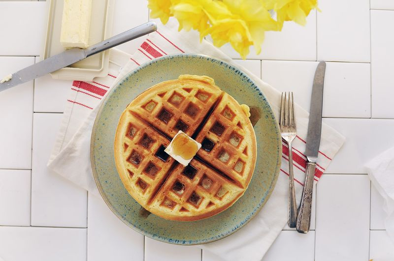

Gaufres
Préparation: 10 minutes
Cuisson: 30 minutes
Total: 40 minutes
Ingrédients
-
2 oeufs

-
2 t de farine
-
1/2 t d'huile végétale
-
1 3/4 t de lait
-
1 c. à table de sucre
-
4 c. à thé de poudre à pâte
-
sel
Instructions
Préchauffer le gaufrier.
Dans un bol moyen, battre 2 oeufs jusqu'à mousseux.
Ajouter les autres ingrédients et battre pour obtenir un mélange lisse.
- 2 t de farine
- 1/2 t d'huile végétale
- 1 3/4 t de lait
- 1 c. à table de sucre
- 4 c. à thé de poudre à pâte
- sel
Remplir le gaufrier au 2/3 de pâte. Cuire environ 5 minutes.
Répéter jusqu'à ce qu'il ne reste plus de pâte.
Servir avec du sirop d'érable.